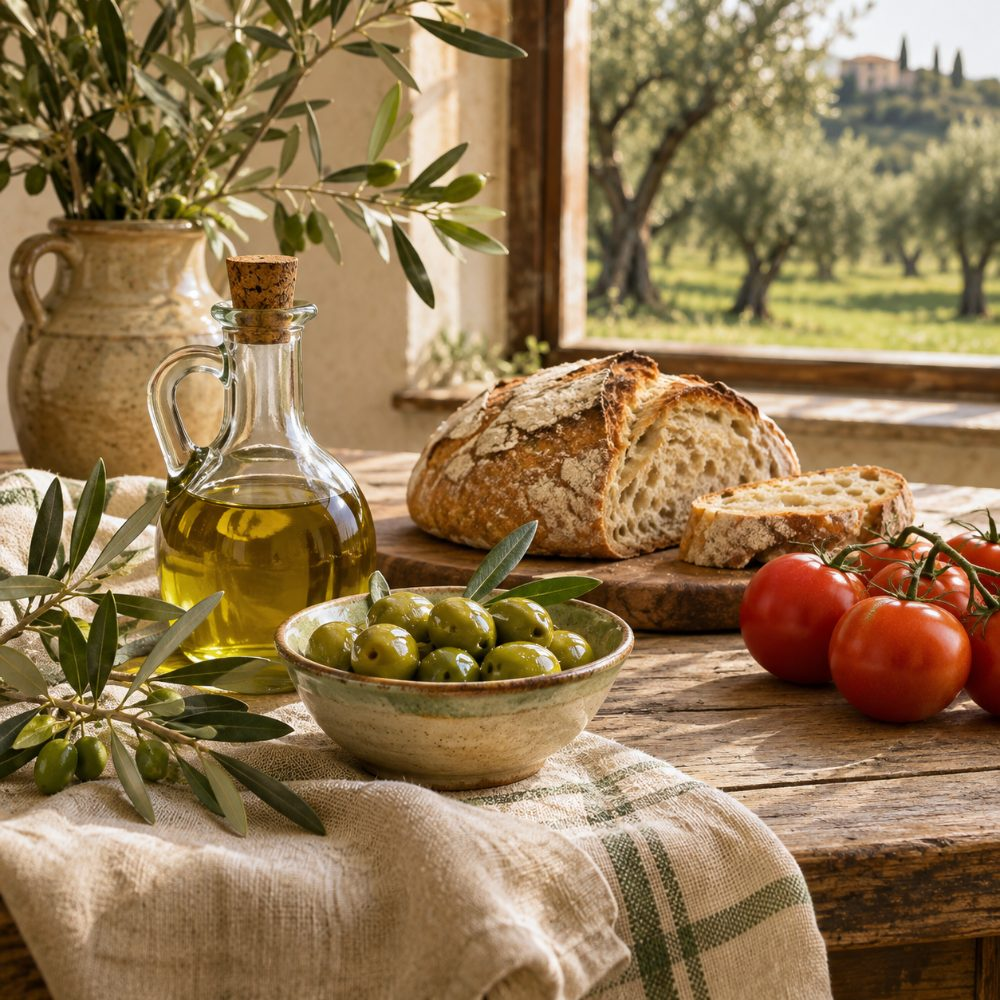

1
Una tradizione di migliaia di anni
L'olivo accompagna la cucina del Mediterraneo da millenni. Scopri come è entrato nelle abitudini a tavola.
ContinuaUn breve articolo con tre curiosità sull'abitudine più antica del Mediterraneo. Si legge in meno di un minuto.
Leggi le curiositàContenuto informativo, richiede meno di 1 minuto.

L'olivo accompagna la cucina del Mediterraneo da millenni. Scopri come è entrato nelle abitudini a tavola.
ContinuaPerché tante famiglie italiane iniziano la colazione con un filo d'olio su pane e pomodoro.
ContinuaEtichetta, colore e profumo: piccoli dettagli che fanno la differenza quando fai la spesa.
ContinuaContenuto sponsorizzato a scopo informativo. Questa pagina non vende prodotti, non fornisce diagnosi e non sostituisce il parere del medico o di un professionista sanitario. Per qualsiasi dubbio sulla tua salute rivolgiti al tuo medico.